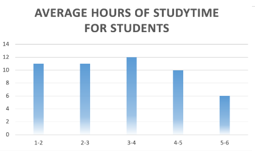
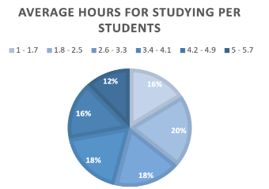
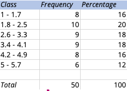

PRESENTATION OF RESEARCH DATA
Bar Graph/Histogram and Pie chart for Average Study Time
When observing the data graphs above, we notice that there is a significantly lower amount of students who take their time to study for more than 4 hours. Only about 12% of students study one fourth of their day. The graph is positively skewed with an outlier. This outlier tells us that out of 50 students, there are 12 students who study for 3-4 hours. Based on the charts above, we can also infer from the data chart below that an average score of a student is significantly higher after studying for 5-6 hours on average compared to those who study for a shorter period of time. These show direct results that a student dedicating more of their time in learning submit better outputs and scores. We learn from picking apart the habits of students, being able to practice study habits is an essential part of education and academics.
The more students take time to learn, read, and write what they see, the more they are able to remember and feel familiar with the lessons given to them. It is important for students to take their time accordingly in their studies in order to achieve marks that give them opportunities in more fields. While the hours a student spends on studying does not heavily correlate to the marks they receive, it is still important to note that it has an undeniable effect on ones grades.
Students are susceptible to cramming, especially when a topic is viewed as difficult, and are more likely to distance themselves from academic tasks. Instead of studying for hours on end in a short stretch and limiting them to one day, dividing the time to study is an effective method of studying. This can improve memory in the long run, as well as avoiding burnout when encountering new and time-consuming topics. This allows for a better schedule with time constraints, as well as extracurricular activities they may have. The process of forgetting what was initially studied and retrieving more information on the topic jogs the memory and exercises the brain. This helps ground the concepts of the initial lesson in place, while also retrieving and learning new information about the topic. This may be what makes it so effective.
  